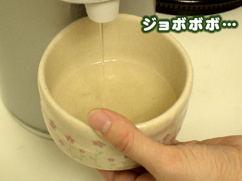
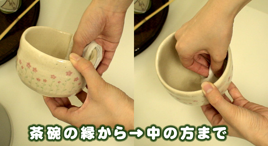
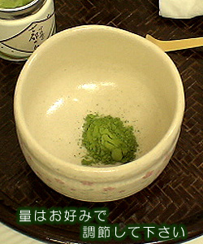
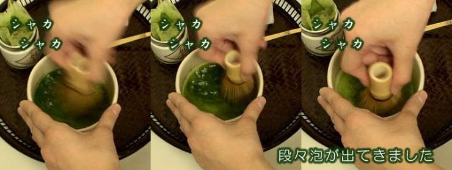
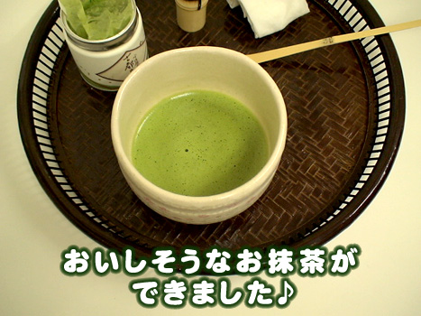

Ocha란?
일본어로 차 라는 뜻을 가지고 있고 있으며 말차를 좋아하고 소개하고 싶어서 사이트를 제작, 소개 하게 되엇습니다.
말차에 대하여
- 차광막을 쳐서 그늘에서 재배한 찻잎을 찌고 갈아서 만든것이다.
- 녹차와 같은 품종의 식물이며 중국에서 유래되었다.
말차 우리는 방법
1. 차 사발에 따뜻한 물을 넣어 차 사발을 데운다.
준비물
말차가루, 차솔, 뜨거운 물, 차 사발, 차 숟가락
2. 물을 잘 버리고 잘 닦은 뒤 말차가루를 넣는다.
 2-1. 잘 안닦으면 물기와 차 가루가
엉겨 거품내기가 어려워진다.
3. 뜨거운 물을 넣고 차솔로 잘 저어준다.
3-1팔과 팔꿈치는 움직이지 않고 손목으로
섞어야 거품이 부드럽게 난다.
(이 과정을 격불이라 한다.)
4. 거품이 올라오면 맛나게 먹는다.
